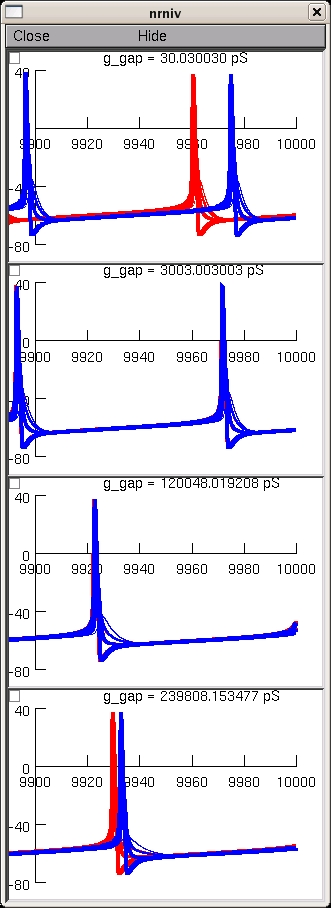

This is the readme for the model for the paper: Saraga F, Ng L, Skinner FK (2006) Distal gap junctions and active dendrites can tune network dynamics. J Neurophysiol 95:1669-82 These model files were supplied by Dr Saraga. cella.hoc: Morphology of cell a cellb.hoc: Morphology of cell b (same as cell a) gap.mod: gap junction defined as a resistor gapdist.hoc: connects the 2 cells at ~400 microns from soma gapdist.ses: opens graphs to display GJ current and soma voltage for both cells gapmid.hoc: connects the 2 cells at ~200 microns from soma gapmid.ses: opens graphs to display GJ current and soma voltage for both cells gapprox.hoc: connects the 2 cells at ~100 microns from soma gapprox.ses: opens graphs to display GJ current and soma voltage for both cells hh.mod: Hodgkin-Huxley sodium and potassium currents initdist: Opens all files for distal gap junctions initmid: Opens all files for middle gap junctions initprox: Opens all files for proximal gap junctions prog.hoc: Inserts HH currents into cell a and cell b Usage: The runs typically take tens of minutes so these simulations are best run with batch scripts. To recreate a figure similar to fig 6 in the paper you can autolaunch from modeldb or download and extract the archive then under mswin ----- Compile the mod files with mknrndll and then double click on the mosinit.hoc unix/linux ---------- Compile the mod files nrnivmodl then start the simulation with nrngui mosinit.hoc MAC OS X -------- Drag and drop the folder created in the extraction onto the mknrndll icon. Drag and drop the mosinit.hoc file onto the nrngui icon. ---------------- Once the simulation is started you can explore the model with the graphical interface (see esp. the miscellaneous functions provided by extras.hoc) or press the create fig 6 button which will generate a panel similar to fig 6. This takes tens of minutes to complete. It should generate a figure like this: 